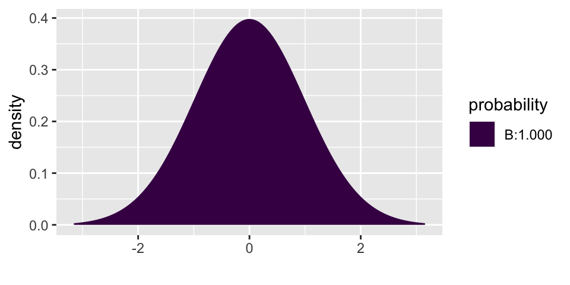
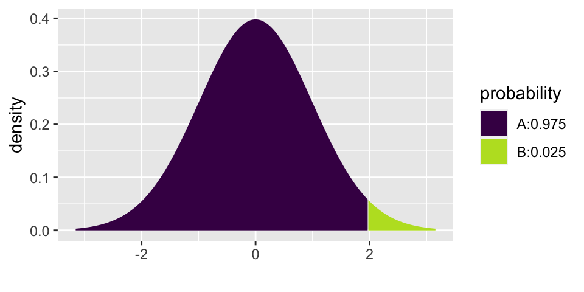
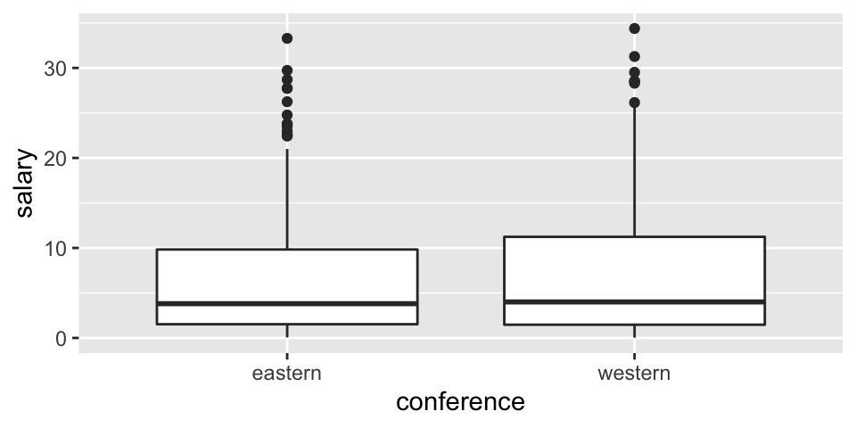
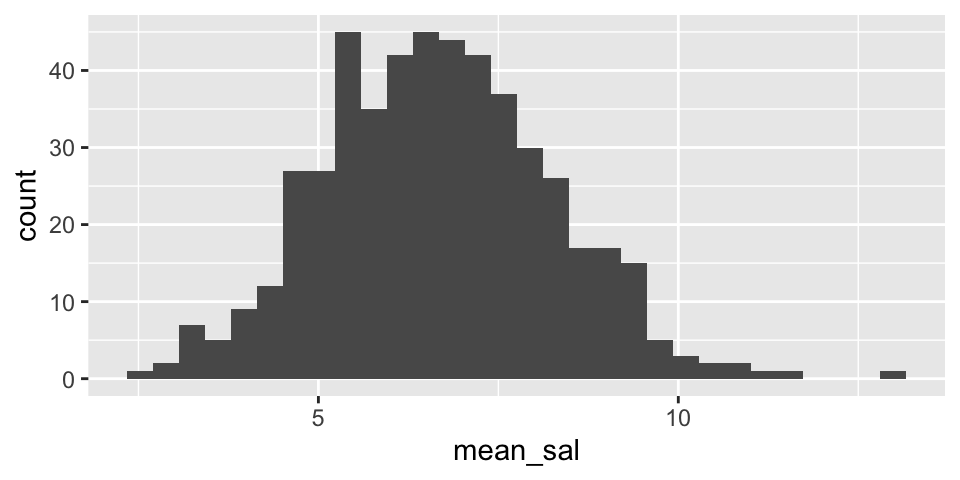
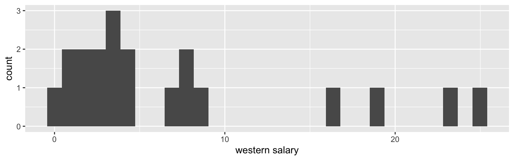
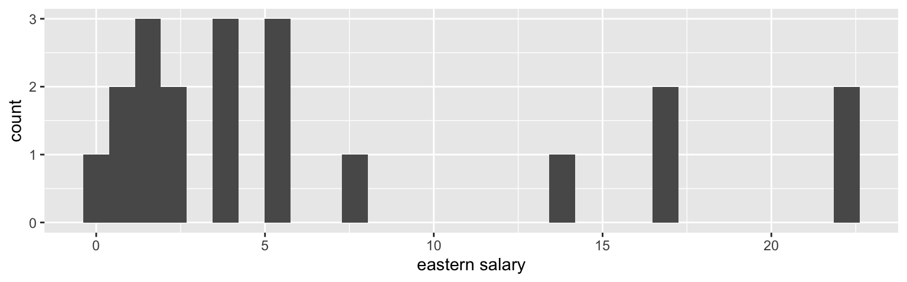
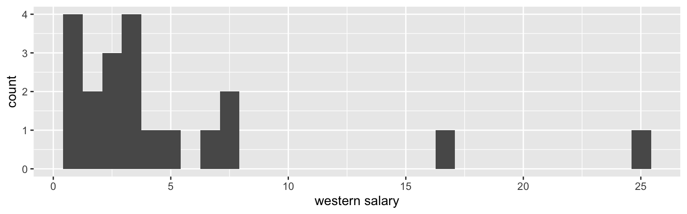
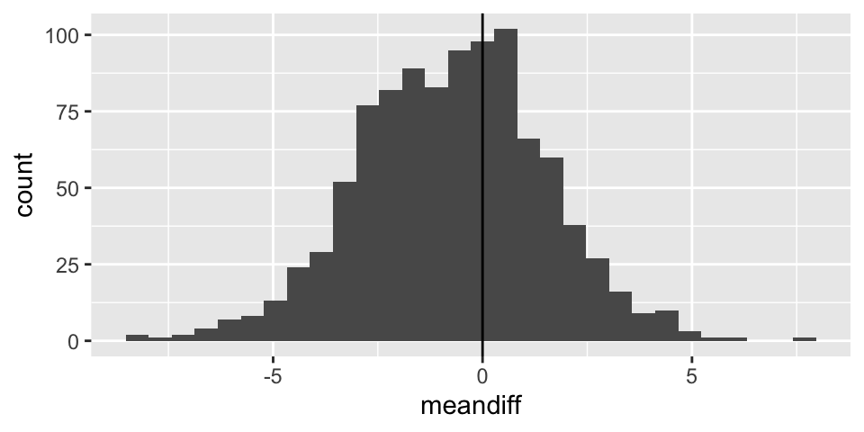
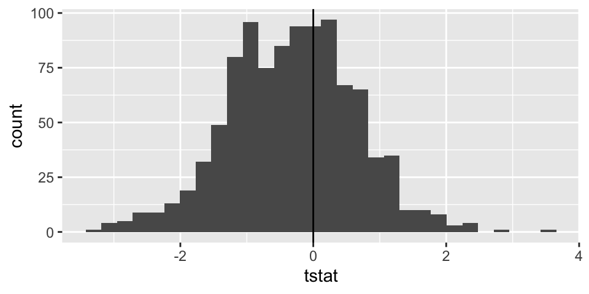

Chapter 6 Inference for numerical data
6.2 Inference for a single mean, \(\mu\)
6.2.1 Mathematical model for distribution of the sample mean
Before coming up with the mathematical model appropriate for this section, it is important to notice that we almost never know the true variability of the data (i.e., \(\sigma\)). Instead, we almost always have to estimate \(\sigma\) using \(s\), the sample standard deviation. It turns out that when the estimate of the variability is used in the denominator, the sampling distribution becomes more variability (longer tails). Recall that it is the tails of the distribution in which we are the most interested, so we don’t want to get those wrong!!
If \(\sigma\) is somehow known: \[\frac{\overline{X} - \mu}{\sigma/\sqrt{n}} \sim N(0,1)\]
But in the more typical situation where \(\sigma\) is estimated using \(s\): \[\frac{\overline{X} - \mu}{s/\sqrt{n}} \sim t_{df = n-1}\]
6.2.1.1 Hypothesis Testing (ISRS 4.1)
If \(H_0: \mu = \mu_0\) is true, then we know that: \[\frac{\overline{X} - \mu}{s/\sqrt{n}} \sim t_{df = n-1}\]
That is, we can use the \(t_{df = n-1}\) distribution to find the p-value for the test. Note, in R we we use the function xpt in the mosaic package.
6.2.1.2 Confidence Intervals (ISRS 4.1.4)
In the setting where there is no null hypothesis statement and an interval estimate is needed, the interval is created in the exact same way as was done with proportions using: \[\overline{X} \pm t_{n-1}^* \cdot SE(\overline{X})\]
Which is the same thing as: \[\overline{X} \pm t_{n-1}^* \cdot s/ \sqrt{n}\]
6.2.1.3 Prediction Intervals (ISCAM 2.6, not in ISRS)
A prediction interval is different from a confidence interval!!! Remember that a confidence interval is a range of values that try to capture a parameter. A prediction interval is meant to capture 95% of future observations (see below for the example on healthy body temperatures). Note that in order to capture the variability in the observations, we combine the variability of the center of the interval (\(s/\sqrt{n}\)) with the variability of the observations themselves (\(s\)).
A \((1-\alpha)100%\) prediction interval has a \((1-\alpha)\) probability of capturing a new observation from the population.
\[\overline{X} \pm t_{n-1}^* \cdot s \sqrt{1 + \frac{1}{n}}\]
6.2.2 Example: healthy body temperature18
The study at hand is meant to determine whether the average healthy body temperature is actually 98.6 F.19
Body temperatures (oral temperatures using a digital thermometer) were recorded for healthy men and women, aged 18-40 years, who were volunteers in Shigella vaccine trials at the University of Maryland Center for Vaccine Development, Baltimore. For these adults, the mean body temperature was found to be 98.249 F with a standard deviation of 0.733 F.20
In order to work through the analysis it is imperative that we understand the data that was collected as part of the research.
| center | variability of data | variability of sample means | sample size |
|---|---|---|---|
| \(\overline{X} = 98.249\) F | \(s = 0.733\) F | \(SE(\overline{X}) = \frac{s}{\sqrt{n}} = \frac{0.733}{\sqrt{130}} = 0.0643\) | \(n=130\) |
| \(\mu\) = true ave healthy body temp (unknown!) | \(\sigma\) = true sd of healthy body temps (unknown!) | \(SD(\overline{X}) = \frac{\sigma}{\sqrt{n}}\) = unknown! |
6.2.2.1 Hypothesis test on true average healthy body temperature
The first research question we want to ask is: how surprising would it be to select a group of 13 participants who have an average healthy body temperature of 98.249 F ?
The questions is set up perfectly for a hypothesis test!
\(H_0: \mu = 98.6\)
\(H_A: \mu \ne 98.6\)
We use the t-distribution to investigate the claim.
\[t-score = \frac{98.249 - 98.6}{0.733/\sqrt{130}} = -5.46\]
How likely is the standardized version of our test statistic to happen if the null hypothesis is true? Well, if \(H_0\) is true, then the t-statistics should have a t-distribution. So we can use the t-distribution to find the p-value (recall that the p-value is the probability of the data or more extreme if \(H_0\) is true.)
The test statistic is -5.46, and even a two-sided p-value (the area doubled) is way less than 0.001.
2 * mosaic::xpt(-5.46, df = 129, ncp = 0)
## [1] 2.354246e-076.2.2.2 Confidence interval for true average healthy body temperature
Possibly more interesting is the confidence interval which would tell us a range of plausible values for healthy body temperatures.
The confidence interval is given by the following formula: \[\overline{X} \pm t_{n-1}^* \cdot s/ \sqrt{n}\]
and is calculated to be (98.121, 98.376). That is, we are 95% confident that the true average healthy body temperature is somewhere between 98.121 F and 98.376 F. Note that 98.6 F is not in the interval!!! Wow.
mosaic::xqt(.975, df = 129)
## [1] 1.97852498.249 - 1.9785 * 0.733 / sqrt(130)## [1] 98.1218198.249 + 1.9785 * 0.733 / sqrt(130)## [1] 98.376196.2.2.3 Prediction interval for individual healthy body temperatures21
Note the fundamental difference between the goal of the confidence interval above and the goal of the prediction interval calculated in this section. A confidence interval is an interval of plausible values for a population parameter. A prediction interval is for a future individual observations.
A \((1-\alpha)100%\) prediction interval has a \((1-\alpha)\) probability of capturing a new observation from the population.
Here, a 95% prediction interval for healthy body temperatures can be calculated using:
\[\overline{X} \pm t_{n-1}^* \cdot s \cdot \sqrt{1 + \frac{1}{n}}\]
\[98.249 \pm t_{129}^* \cdot 0.733 \cdot \sqrt{1 + \frac{1}{130}}\]
Which gives a 95% prediction interval of (96.79 F, 99.70 F). There is a 0.95 probability that if I reach into the population, the person selected will have a healthy body temperature between 96.79 F and 99.70 F. Said differently, 95% of the individuals in the population will have a healthy body temperature between 96.79 F and 99.70 F (a much wider range of values than the confidence interval!)
mosaic::xqt(.975, df = 129)
## [1] 1.97852498.249 - 1.9785*0.733*sqrt(1 + 1/130)## [1] 96.7931998.249 + 1.9785*0.733*sqrt(1 + 1/130)## [1] 99.704816.3 Comparing two independent means
It turns out that in both the setting where random samples are taken (e.g., NBA salaries) and the setting where random allocation is done (e.g., sleep deprivation), the t-distribution describes the distribution of the test statistic quite well. Note that the variability associated with the difference in means uses the variability of both the samples (and their individual sample sizes!).
\[\begin{eqnarray*} \mbox{parameter} &=& \mu_1 - \mu_2\\ \mbox{statistic} &=& \overline{X}_1 - \overline{X}_2\\ SE_{\overline{X}_1 - \overline{X}_2} &=& ????? \end{eqnarray*}\]
In general, the math is done on the variance (which is just the squared standard deviations). \[\begin{eqnarray*} var(A - B) &=& var(A) + var(B)\\ var(\overline{X}_1 - \overline{X}_2) &=& var(\overline{X}_1) + var(\overline{X}_2)\\ &=& \sigma^2_1 / n_1 + \sigma^2_2 / n_2\\ SE(\overline{X}_1 - \overline{X}_2) &=& \sqrt{s^2_1 / n_1 + s^2_2 / n_2}\\ \end{eqnarray*}\]
The above methods can be used when the samples are of different sizes and when the variability in the two samples is quite different (\(s_1 \ne s_2\)). If we use the above procedures, the exact degrees of freedom are not straightforward to calculate:
\[\begin{eqnarray*} df &=& \frac{ \bigg(\frac{s^2_1}{n_1} + \frac{s^2_2}{n_2} \bigg)^2}{ \bigg[ \frac{(s^2_1/n_1)^2}{n_1 - 1} + \frac{(s^2_2/n_2)^2}{n_2 - 1} \bigg] }\ \ \ \ \ \ \ \mbox{Yikes!!!!}\\ df &\approx& \min \{ n_1 - 1, n_2 -1 \} \\ \end{eqnarray*}\]
With the SE appropriately defined, the hypothesis test and confidence interval follow the methods from earlier in the semester.
\(H_0: \mu_1 - \mu_2 = 0\)
\(H_A: \mu_1 - \mu_2 \ne 0\)
When \(H_0\) is true:
\[\begin{eqnarray*} t &=& \frac{(\overline{X}_1 - \overline{X}_2) - (\mu_1 - \mu_2)_0}{\sqrt{s_1^2 / n_1 + s_2^2 / n_2}}\\ &=& \frac{(\overline{X}_1 - \overline{X}_2) - 0}{\sqrt{s_1^2 / n_1 + s_2^2 / n_2}}\\ &\sim& t_{\min \{ n_1 - 1, n_2 -1 \} } \end{eqnarray*}\]
Which means that the \(t_{\min \{ n_1 - 1, n_2 -1 \} }\)-distribution can be used to find a p-value associated with the t-score: \[\mbox{t-score} = \frac{(\overline{X}_1 - \overline{X}_2) - 0}{\sqrt{s_1^2 / n_1 + s_2^2 / n_2}}.\]
Additionally, a \((1-\alpha)100\)% confidence interval for \((\mu_1 - \mu_2)\) can be found by computing:
\[(\overline{X}_1 - \overline{X}_2) \pm t_{\min \{ n_1 - 1, n_2 -1 \} }^* \cdot \sqrt{s_1^2 / n_1 + s_2^2 / n_2}.\]
6.4 R code for inference on 1 or 2 means.
Above, R is used primarily as a calculator and a way to find the appropriate values from the t-distribution (using mosaic::xpt and mosaic::xqt \(\rightarrow\) note that along with the first argument (either a probability or a place on the x-axis) it is important to add the degrees of freedom df and possibly the argument ncp=0 which centers the graph at zero).
Consider the teacher salary data available in the OpenIntro textbook.
This data set contains teacher salaries from 2009-2010 for 71 teachers employed by the St. Louis Public School in Michigan, as well as several covariates. Posted on opendata.socrata.com by Jeff Kowalski. Original source: http://stlouis.edzone.net
teachers <- read_delim("https://www.openintro.org/data/tab-delimited/teacher.txt",
delim= "\t")6.4.1 t.test()
The function which is typically used to do t-tests is the function t.test(). Note that the t.test() function requires a complete dataset, not just the summary statistics. However, the t.test() can be used to do any of the variety of tests we’ve seen (and the ones we haven’t seen!): one sample t-test, two independent samples t-test (with or without equal variances), paired t-test.
6.4.1.1 One sample t-test
For example, we might be interested in testing whether the average salary (of all teachers in St Louis) is above $47,000 a year. The p-value is extremely small. We reject \(H_0\). That is, we can claim that the true average base salary is above $47,000. (Note, to calculate a CI, use alternative = "two.sided".)
\(H_0: \mu = 47,000\)
\(H_A: \mu > 47,000\)
t.test(teachers$base, mu = 47000, alternative = "greater")##
## One Sample t-test
##
## data: teachers$base
## t = 7.9466, df = 70, p-value = 1.146e-11
## alternative hypothesis: true mean is greater than 47000
## 95 percent confidence interval:
## 54440.82 Inf
## sample estimates:
## mean of x
## 56415.966.4.1.2 Two independent samples t-test
Or, maybe interest is in knowing whether the base salary for teachers with a BA degree is less than those with an MA degree, on average. Note, \(\mu\) denotes the average salary in the population group denoted by the subscript. The p-value is 0.442, so we would not reject the null hypothesis. (Note, to calculate a CI, use alternative = "two.sided".)
\(H_0: \mu_{BA} = \mu_{MA}\)
\(H_A: \mu_{BA} < \mu_{MA}\)
t.test(base ~ degree, alternative = "less", data = teachers)##
## Welch Two Sample t-test
##
## data: base by degree
## t = -0.14639, df = 65.238, p-value = 0.442
## alternative hypothesis: true difference in means is less than 0
## 95 percent confidence interval:
## -Inf 3664.912
## sample estimates:
## mean in group BA mean in group MA
## 56257.10 56609.566.4.2 infer
We aren’t going to cover the bootstrapping or randomization tests for the quantitative variables. But notice that the infer syntax is almost identical to that which we covered when we were working with proportions.
Also, notice that the computational approach gives almost identical answers to the mathematical model (t-distribution) from above.
6.4.2.1 One sample bootstrapping on mean
set.seed(47)
# calculate the observed test statistic
# note that we could use `stat = "median"` or `stat = "t"`
( x_bar_base <- teachers %>%
specify(response = base) %>%
calculate(stat = "mean") )## # A tibble: 1 x 1
## stat
## <dbl>
## 1 56416.# create the null sampling distribution
null_dist <- teachers %>%
specify(response = base) %>%
hypothesize(null = "point", mu = 47000) %>%
generate(reps = 1000, type = "bootstrap") %>%
calculate(stat = "mean")
# visualize the null sampling distribution
visualize(null_dist) +
shade_p_value(obs_stat = x_bar_base, direction = "greater")
# calculate the p-value
null_dist %>%
get_p_value(obs_stat = x_bar_base, direction = "greater")## # A tibble: 1 x 1
## p_value
## <dbl>
## 1 06.4.2.2 Two independent samples comparing two means
p-value is now 0.464 (very close to 0.442 given by the smooth t-distribution curve).
set.seed(47)
# calculate the observed test statistic
( diff_x_bar_base <- teachers %>%
specify(base ~ degree) %>%
calculate(stat = "diff in means", order = c("MA", "BA")) )## # A tibble: 1 x 1
## stat
## <dbl>
## 1 352.# create the null sampling distribution
null_dist <- teachers %>%
specify(base ~ degree) %>%
hypothesize(null = "independence") %>%
generate(reps = 1000, type ="permute") %>%
calculate(stat = "diff in means", order = c("MA", "BA"))
# visualize the null sampling distribution
visualize(null_dist) +
shade_p_value(obs_stat = diff_x_bar_base, direction = "greater")
# calculate the p-value
null_dist %>%
get_p_value(obs_stat = diff_x_bar_base, direction = "greater")## # A tibble: 1 x 1
## p_value
## <dbl>
## 1 0.4546.4.3 NBA Salaries example from ISCAM Inv 4.2
There is R code in the ISCAM book. I’ve written the series of steps in a slightly different way with the same results.
6.4.3.1 EDA
Before thinking about inference, let’s look at the population (for 2017-18). The information for today is the population because it includes the salaries of all NBA players in 2017. We can see that in this particular year, the average salary in the Western conference is slightly higher.
NBAsalary <- read_delim("http://www.rossmanchance.com/iscam3/data/NBASalaries2017.txt", delim = "\t", escape_double = FALSE, trim_ws = TRUE)
ggplot(NBAsalary) +
geom_boxplot(aes(x=conference, y = salary))
ggplot(NBAsalary) +
geom_histogram(aes(fill = conference, x = salary))
ggplot(NBAsalary) +
geom_histogram(aes(x = salary)) +
facet_wrap(~ conference)
NBAsalary %>%
group_by(conference) %>%
summarize(mu = mean(salary), sigma = sd(salary), N = n(), min(salary), max(salary), median(salary))## # A tibble: 2 x 7
## conference mu sigma N `min(salary)` `max(salary)` `median(salary)`
## <chr> <dbl> <dbl> <int> <dbl> <dbl> <dbl>
## 1 eastern 6.61 7.01 227 0.0577 33.3 3.81
## 2 western 7.42 7.76 221 0.0320 34.4 46.4.3.2 Sampling distribution for one mean
Before considering how the sample means vary, let’s visualize samples from each conference.
NBAsalary %>%
filter(conference == "eastern") %>%
sample_n(size = 20, replace = FALSE) %>%
ggplot() +
geom_histogram(aes(x = salary)) + xlab("eastern salary")
NBAsalary %>%
filter(conference == "western") %>%
sample_n(size = 20, replace = FALSE) %>%
ggplot() +
geom_histogram(aes(x = salary)) + xlab("western salary")
One way to think about how the difference in means varies is to first visualize the variability in the distribution for a single mean (i.e., from one conference). Let’s look at the variability in the Eastern conference as well as the variability in the Western conference.
Note that from the population analysis above (full set of observations), we see that \(\sigma \approx 7\). So the histograms below should have a standard deviation of close to \(\sigma / \sqrt{20} = 1.5\). Do they?
Are the two histograms centered at the same place? Should they be?
NBAsalary %>%
filter(conference == "eastern") %>%
rep_sample_n(size = 20, replace = FALSE, reps = 500) %>%
summarize(mean_sal = mean(salary)) %>%
ggplot() +
geom_histogram(aes(x=mean_sal))
NBAsalary %>%
filter(conference == "western") %>%
rep_sample_n(size = 20, replace = FALSE, reps = 500) %>%
summarize(mean_sal = mean(salary)) %>%
ggplot() +
geom_histogram(aes(x=mean_sal))
6.4.3.3 Sampling distribution for two means
Note: the code selects 20 random salaries from the Eastern NBA conference and 20 random salaries from the Western NBA conference. Using those two different samples, a t-statistic is selected. The whole process is repeated 1000 times.
set.seed(4747)
t_salaries <- data.frame(meandiff = double(), tstat = double())
for(i in 1:1000){
one_t<- NBAsalary %>%
group_by(conference) %>%
sample_n(size = 20, replace = FALSE) %>%
summarize(mn = mean(salary), sd = sd(salary), n = n()) %>%
pivot_wider(names_from = conference, values_from = 2:4) %>%
summarize(meandiff = (mn_eastern - mn_western),
tstat = (mn_eastern - mn_western) /
sqrt(sd_eastern^2 / n_eastern + sd_western^2 / n_western))
t_salaries[i,] <- one_t
}
t_salaries %>%
ggplot() +
geom_histogram(aes(x=meandiff)) +
geom_vline(xintercept = 0)
t_salaries %>%
ggplot() +
geom_histogram(aes(x=tstat)) +
geom_vline(xintercept = 0)
6.5 Reflection Questions
In the interest of pairing down topics for Spring 2020, the following topics will not be covered:
- all of the computational tests associated with two means (e.g., bootstrapping, randomization test, etc.). This includes the following sections in the books that we will not cover: ISCAM Inv 2.9, 4.4, 4.9, 4.11 & ISRS 4.5.
- we will not discussed paired samples (e.g., “before and after,” “left and right car tires,” etc.). This includes the following sections in the books that we will not cover: ISCAM Inv 4.8, 4.9, 4.10, 4.11 & ISRS 4.2.
- we will not cover ANVOA. This includes the following sections in the books that we will not cover: ISCAM Inv 5.4, 5.5 & ISRS 4.4.
The reflection questions below that we will not cover are marked with an asterisk *.
6.5.1 1 quantitative variable: Chapter 4, Section 1
- What changed about the studies (data structure) from Chapters 2 & 3?
- What is the statistic of interest now? What is the parameter of interest?
- What is the difference between the distribution of the data and the distribution of the statistic? There is a theoretical difference as well as a computational difference.
- What is the limiting sampling distribution of the statistic? (Note, the answer here is for big samples, that is the Central Limit Theorem works only where there is a limit… i.e., the sample size is big.)
- If interest is in a statistics other than the sample mean, what is a tool we can use for finding the alternative statistic’s sampling distribution?
- Explain the intuition behind bootstrapping.
- Explain how the SE for the statistic is calculated using bootstrapping.
- What is the difference between a normal distribution and a t distribution?
- When do we use a z and when do we use a t?
- When would you use a confidence interval and when would you use a hypothesis test?
- What different information does a boxplot give versus a histogram?
6.5.2 2 means (1 quantitative variable, 1 binary variable): Chapter 4, Section 3
- What changed about the studies (data structure) from section 4.1?
- What is the statistic of interest now? What is the parameter of interest?
- What is the sampling distribution for the statistic of interest?
- How is the t-distribution become relevant?
- What are degrees of freedom in general? What are the actual degrees of freedom for the test in section 4.3?
- How is the null mechanism different across the three analysis methods in section 3.2: randomization test, two-sample t-test, random sampling test (n.b. this is also called the parametric bootstrap)?
- How do you create a CI? How do you interpret the CI?
- What if your data are NOT normal? What strategies can you try out?
6.5.2.1 Paired sample, difference in means
- What changed about the studies (data structure) in section 4.2 as compared with 4.1 or 4.3?
- What is the statistic of interest now? What is the parameter of interest?
- What is the sampling distribution for the statistic of interest?
- What benefit does pairing have on the analysis?
- What happens if a paired study is analyzed as if it were an independent two sample study? (What happens to the p-value? What happens to the CI?)
- What is the easiest way to think of / analyze paired data?
6.5.2.2 * (not covering in Spring 2021) ANOVA
- Why are these tests called ANalysis Of VAriance (ANOVA)?
- Describe the variability in the numerator and the variability in the denominator. What does each measure?
- What are the null and alternative hypotheses for ANOVA?
- What features of the data affect the power of the test? What does power mean here?
- What are the technical conditions? Why do we need equal variances here?
Inv 2.5, Chance & Rossman, ISCAM↩︎
Conventional wisdom says that the reason 98.6 has hung around is because it translates to 35 C. Indeed, it it agreed that, to the nearest integer, the average healthy human body temperature is 37 C. But there is also some consensus that it is slightly lower than 37 C (if we are willing to use more significant digits). The idea is that we have hung on to 98.6 because the decimal feels like a precise measurement. In reality, it is just the conversion from 37 C to F.↩︎
Mackowiak, Wasserman, & Levine, Journal of the American Medical Association, 1992↩︎
Inv 2.6, Chance & Rossman, ISCAM↩︎